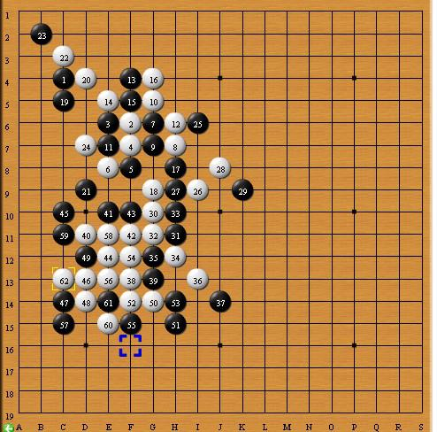

【暑假杯】一招不慎 满盘皆输
#1 【暑假杯】一招不慎 满盘皆输 作者：蓝天蓝 发表时间：2014-6-3 22:21:02
【暑假杯】一招不慎 满盘皆输2013年暑假杯家族争霸赛2台选手对局晴空棋评
第二轮： 【讲五堂】jwt2（假先） vs 【皇朝】no2（黑）黑胜
http://game.freewzq.com/offlineDisplayGame.html?html=820520&id=1652
一招不慎 满盘皆输
时间：2013年 7月27日 地点：新慢棋网
棋局总谱
1：【开局不慎】白外围得势
实战图如下：
【讲五堂】jwt2先手下在C4（这个点比C3有一些优势）所以. 【皇朝】no2提出交换
.白棋第2手下在F6(注：下一手交换由于黑棋落下第一个子后，白棋有权利要求交换，所以黑棋一般情况下都会第一手选择边角开局。白棋2手应该起到的作用是限制黑棋第一手棋向外围扩散.所以白棋的第2手棋不能离第一手棋太远。离得太近也不行，（见参考图一）
参考图一如下：
离得太近黑棋3手就很轻松的给卦上了。
黑棋3手下在E6.。白棋的2手选择的这个点很好（既不会被黑棋卦上 ，又有利于自己接下来的进攻）既然白棋有这样的想法，黑棋要想限制白棋的2手向外延伸 是很困难的 。因为白棋2手除了不能向左上方延伸外，其他的方向都可以尽情的延伸。所以黑棋3手选择贴着白棋的2手进行贴身防守。（尽管这样防守太过牵强 ，但也是无奈之举） 。 这个时候黑棋出现了一个活三点F7 .为了挡住这个活三白棋选择了F7（先下手为强）
小注：也许有人会问D5不也是活三点吗？ 可以肯定的是黑棋绝对不会再D5活三。因为黑棋现在的首要任务是冲出白棋的包围圈）
2：【一子不慎】 白棋不慎 棋面平衡
实战图如下：
白棋已经落下的白2和白4 在同一线上（也就是说存在在F8活三或者在G7成角的危险）所以黑棋5手挡在了F8.白棋6手（白棋可能是想在D9活三然后利用这个活三继续做棋(见参考图二)
参考图二如下：
黑棋当然不会让白棋的这个想法成为现实所以黑棋挡在G6.白棋8手下在H7(此时白棋选择贸然进攻 ，目的很明确 就是想联合白4活三。还有一种可能，白棋可能担心黑棋下一手会落在F5点形成2个活二。黑棋9手粉碎白棋的这个企图。（白棋8手倒不如就坡下驴。见参考图三）
参考图三如下：
白8手往下冲，为后面的棋做铺垫。
白棋10手挡在G5（这样的话，黑棋可能往下延伸 。见参考图四）
参考图四如下：
小注：这样的话，白棋是占优的。但是，这样的11还是让人提心吊胆）
3：【争夺外势】双方开始争夺外势
实战图如下：
11——12这两手棋是双方互挡对方的活二。（虽然这2手没有啥高超技术的体现。但是挡的都很有必要。因为2---10 和3——9这两个活三线路都很有威胁）12手后双方出现了差不多的棋型。13手F4 ，即可以挡住白棋的活二，又与1手形成活二。同时与3----11这个活二配合，对白棋连攻胜（见参考图五）
参考图五如下：
白棋14手挡住关键点E5（关键的原因见参考图五）同时形成双活二。15手挡中间（破掉白棋双活二，同时与黑3形成活三。16手挡住这个极具威胁的活二。（之所以说3——15这个活二极具威胁，是因为3----11活二的存在（见参考图六）
参考图六如下：
如果任其发展，黑棋就胜了。
17手挡在H8,(白棋的活三点，同时与5——11这个活二再配合7手和9手对白棋构成重大威胁)
小注：个人认为，此时白棋往下可以围绕I6做文章。
4：【争夺外势】继续争夺外势
实战图如下：
]
白棋18手 挡住相当危险的G9(见参考图七)
参考图七如下：
从图上看，黑棋胜了。
19手黑棋下在C5,(一来可以和3手 ， 11手配合冲四 。二来也可以在D4做棋。三来 可以与1手配合向下活三，)白棋20手占住D4. 黑棋见左上方已经没有大的作为。于是选择在下方防住白棋冲三点D9.(因为白棋一旦占据这个点便可以与18手配合对黑棋构成威胁。见参考图八)
参考图八如下;
白棋胜了。22手白棋冲四，粉碎1——19活三的企图）24手D7(一手防守棋。主要是防住3——15 向左下方的延伸 同时防住1，3,11.19.21 这5手棋与这个延伸之间存在的相互配合)
战到24手，白棋在右边最强的进攻点就是I6.(见参考图九)
参考图九如下：
如果任其发展 ，就是这样的局面。
5【外围做棋】白棋外围做棋
实战图如下：

所以黑棋25手挡在了I6这个点。白棋26挡在I9可以看作是防止黑棋9—17斜向下延伸。（同时与6和24在F9形成双活三）。27挡中间（这手棋挡在G10效果或许更好些）（见参考图十）
参考图十如下：
]
这样的话，黑棋就不会如此狼狈了。
白棋28手（实战中常用的走法。既可在K7活三，又可以在k9冲四同时还可以在K8活三（见参考图十一）
参考图十一如下：
白棋就连攻胜了。所以黑棋的29手相当关键 ，好在黑棋判断正确，果断出手。
白棋30手跳活三。（说实话，刚看到这个30我真的吓了一跳。因为后面接着是白棋的双活三）。好在有惊无险，白棋32双活三，黑棋冲四破掉一个活三。
6【扩展地盘】白棋向下扩展地盘
实战图如下：
黑棋33手冲四，35手挡活三。（这2手没有疑问，因为这是救命的办法）白棋36手向下活三（因为棋盘下方的空间足够大，下五子棋要想取胜必须要有足够的空间来供应子力之间的相互配合）37挡下面（也是出于这样的考虑，限制白棋向开阔地带延伸）。
7：【以守为攻】防守得外势
实战图如下：
38手F13,战至37手。目前的局面是这样的：白棋有一个冲四，而黑棋有一个活二。白棋发现往上冲四到E9或者F10没有任何意义，干脆选择挡一下黑棋的这个活二。（38手之所以不继续进攻 ，或者向右方扩展地盘，是因为那样做不但意义不大，而且会更加被动 。见参考图十二）
参考图十二如下;
正所谓，满目的进攻等于失败。38手下在F13后，白棋形成了一个活二。39手破坏掉这个活二。白棋40手做VCT（具体点是F9, E10 , F10, C10 VCT.）41手挡住VCT关键点E10.(不但破坏了白棋的计划，而且黑棋形成了活三.)白棋42手后，白棋在F10有连攻胜。黑棋43手挡一下，同时与39手形成活二。如果黑棋43手档上面的白棋就连攻胜了。（见参考图十三）
参考图十三如下：

白棋44手被迫冲四。
8：【无关大局】棋面无影响
实战图如下：
dl]
白棋46手一石二鸟（既自己冲四 ，又破坏掉黑棋的冲四，）白棋48手， 50手连续冲四
9:【一招不慎】冒进的结果
实战图如下：
，
[
从52手开始，双方将战火蔓延到棋盘的下方（因为这个区域空间巨大，足够双方施展拳脚）。52手白棋I15（既限制一下黑棋37手向右上方扩散，又防止黑棋39和43手向下蔓延， 同时还与白棋36手形成跳活二。可谓一石三鸟）。黑棋53手挡中间（刚才考虑了一下 。单从这一区域来说 ，黑棋53手下在I14无可厚非。见参考图十四）
参考图十四如下：
黑棋 成角向上攻击 ，十多手后胜。
白棋54手限制住黑棋37手和53手配合向四周扩散（见参考图十五.）
参考图十五如下：
从这幅图来看，从53手开始，黑棋就可以胜了。
55手黑棋做棋，57手成角（55手的直指，为57手成角进攻做铺垫。）白棋55一手防守棋。白棋58手已经乱了章法，竟然活三进攻。（此时活三无异于自缢，因为58手后，白棋没有连续进攻。换句话说，58手活三正好帮了黑棋的忙，本来黑棋形成的这个直角不能完全保证黑棋必胜，白棋这手贸然活三。正好给了黑棋赢棋的机会。
10:【有惊无险】妙手对妙手
实战图如下：
黑棋59防上面。至此，黑棋 29 37 55 59 这4手棋形成正方形（这种形状，基本必胜了 ）但是具体到这盘起来说如果白棋防守得当，或许还有机会（见参考图十六）
参考图十六如下：
虽然结果还是黑胜，但是 ，黑胜的相当艰难.
60手白棋做最后一搏。我们来分析一下白棋60手。相当有讲究。
（1）在G14 I16 J15 连续冲四 可以胜
（2）G15胜
黑棋61妙手，粉碎白棋所有企图。
此后，由于黑棋右上方优势明显，而且还占有先手，白棋无奈
［此帖子已被 蓝天蓝 在 2014-6-6 12:10:56 编辑过］